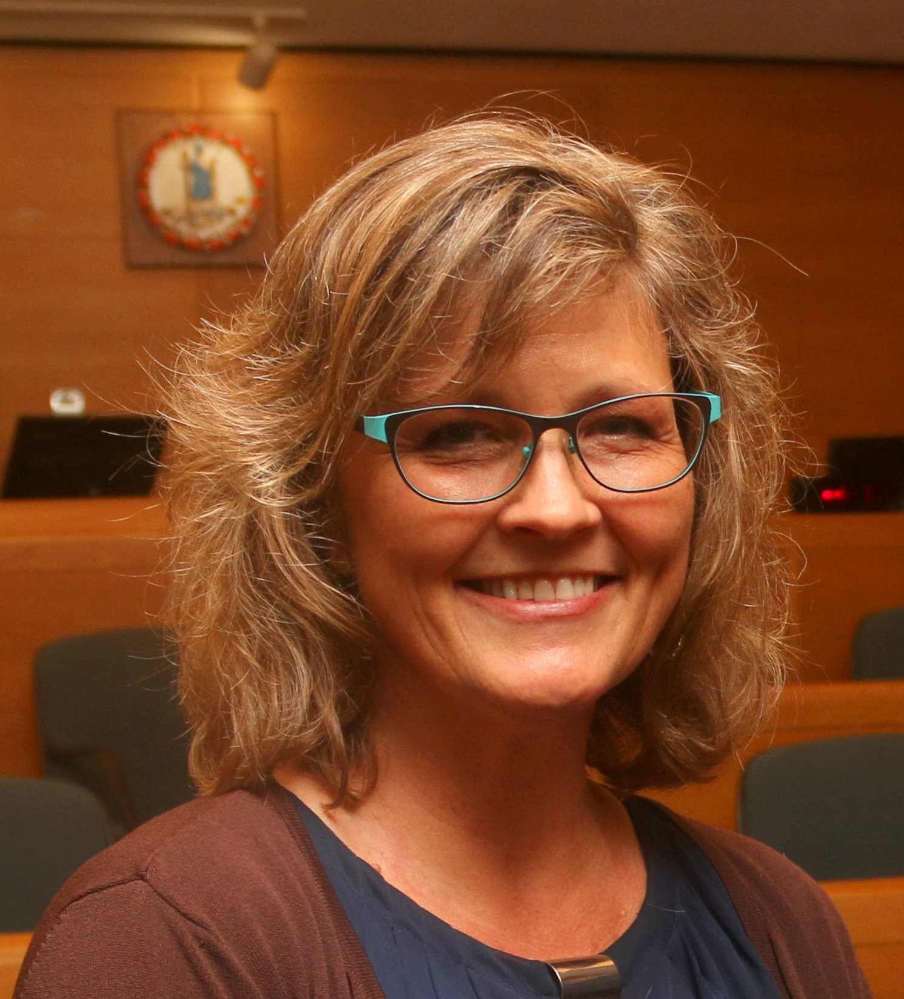

MGT 4334
Dr. Jamison
Course Description
MGT 4334 covers Ethical Leadership and Corporate Social Responsibility. This senior level class covers several different aspects of ethical decision making andhow to be a fair and just leader in today's corporate environment. We cover various ethical issues and how they might be addressed, while still operating a profitable business.
Teacher's Bio / Interests
Dr. Jamison enjoys spending time on her farm, serving on the Roanoke City School Board, and serving as a management consultant.
My Opinion
Overall, this class is a fair, but difficult one. We cover many topics and it has caused me to become a more critical thinker and better prepared leader.
Expected Grade
I expect an A in this class.